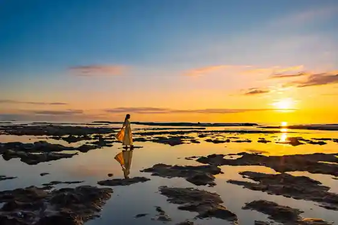
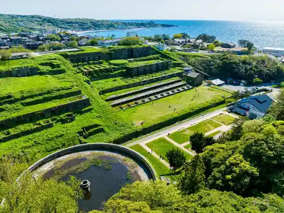
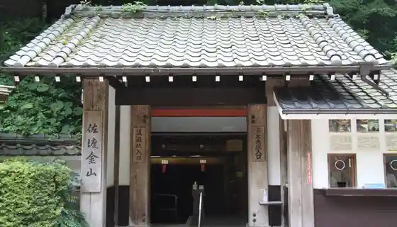

Man Tatamijiki
Sado, Niigata · 0259-86-3200 · Official / source link

Kitazawa Fuyu Senko Ba
Sado, Niigata · 0259-67-7602 · Official / source link

Ameya no Sambashi
Sado, Niigata · 0259-67-7602 · Official / source link
Historic Site Sado Kanayama
Sado, Niigata · 0259-74-2389 · Official / source link

Toki no Mori Park
Sado, Niigata · 0259-22-4123 · Official / source link
Sado Rekishi Densetsu Kan
Sado, Niigata · 0259-55-2525 · Official / source link
Sado Nishi Mikawa Gorudo Park
Sado, Niigata · 0259-58-2021 · Official / source link
Ono Kame / Tobishimakanzo Gunsei Chi
Sado, Niigata · 0259-27-5000 · Official / source link
Tarai Fune Experience (Yajima Taiken Koryu Kan)
Sado, Niigata · 0259-86-2992 · Official / source link
Yajima Kei Shima
Sado, Niigata · 0259-27-5000 · Official / source link
Shukunegi
Sado, Niigata · 0259-86-3200 · Official / source link
Myo Sen Tera
Sado, Niigata · 0259-55-2061 · Official / source link
Dai Sado Sukai Line
Sado, Niigata · 0259-27-5000 · Official / source link
Senkaku Wan Yo Shima Yuen
Sado, Niigata · 0259-75-2311 · Official / source link
Ni Tsu Kame Beach
Sado, Niigata · 0259-67-7602 · Official / source link
Hatano Onsen Matsu Izumi Kaku
Sado, Niigata · 0259-66-4175 · Official / source link
Ni Tsu Kame
Sado, Niigata · Official / source link
Namban Ebi
Sado, Niigata · 025-244-6181 · Official / source link
Sado Kanzo WEEK
Sado, Niigata · 0259-26-2410 · Official / source link
Do Tsu Shrine
Sado, Niigata · 0259-88-2030 · Official / source link
Shiizaki Onsen
Sado, Niigata · 0259-27-5000 · Official / source link
Autumn Leaves Yama
Sado, Niigata · 0259-27-5000 · Official / source link
Nanaura Coast
Sado, Niigata · 0259-74-2220 · Official / source link
Shukunegi no Ryuki Hashoku Dai
Sado, Niigata · Official / source link
Ryuo Hora
Sado, Niigata · 0259-86-2368 · Official / source link
Chojagahashi
Sado, Niigata · 0259-27-5000 · Official / source link
Sawata Beach
Sado, Niigata · 0259-67-7602 · Official / source link
Sekai Isan Rainabasu
Sado, Niigata · 0259-52-3200 · Official / source link
Niiho Katagami Onsen
Sado, Niigata · 0259-22-4126 · Official / source link
Sai no Kawara
Sado, Niigata · Official / source link
Benkei no Hasami Iwa
Sado, Niigata · 0259-74-2220 · Official / source link
Ohazama Minato
Sado, Niigata · Official / source link
Matsugasaki Hisutorii Park
Sado, Niigata · 0259-67-7944 · Official / source link
Sado Taiko Taiken Koryu Kan Tatako Kan
Sado, Niigata · 0259-86-2320 · Official / source link
Daizen Shrine
Sado, Niigata · 0259-55-2953 · Official / source link
Kyu Aikawa Kochi Shisho
Sado, Niigata · Official / source link
Sado Bugyo Tokoro Ato
Sado, Niigata · 0259-74-2201 · Official / source link
Kiyomizudera
Sado, Niigata · 0259-22-2167 · Official / source link
Ni Tsu Kame Campground
Sado, Niigata · 0259-26-2311 · Official / source link
Senjojiki
Sado, Niigata · Official / source link
Ushio Shrine
Sado, Niigata · 0259-22-2237 · Official / source link
Uga Shrine
Sado, Niigata · 0259-27-5000 · Official / source link
ist-Sado (Kyu : Sado Kan Misaki Oto Campground)
Sado, Niigata · 070-9046-0615 · Official / source link
Senkaku Wan
Sado, Niigata · 0259-27-5000 · Official / source link
Shiitaun Shopping Street
Sado, Niigata · Official / source link
Tassha Beach
Sado, Niigata · 0259-67-7602 · Official / source link
Nyu Saki Beach
Sado, Niigata · 0259-67-7602 · Official / source link
Donden Yama
Sado, Niigata · 0259-27-5000 · Official / source link
Kubota Campground
Sado, Niigata · Official / source link
Jinmen'iwa (Tateiwa)
Sado, Niigata · Official / source link
Hiyoshi Shrine
Sado, Niigata · Official / source link
Shiizaki Suwa Shrine
Sado, Niigata · Official / source link
Sado Kuni Aikawa Hina Festival
Sado, Niigata · 0259-74-2220 · Official / source link
Yajima Taiken Koryu Kan
Sado, Niigata · 0259-86-2992 · Official / source link
Aka Kame Kaze Shima Nagisa Park
Sado, Niigata · 0259-27-2116 · Official / source link
Fufu Iwa
Sado, Niigata · 0259-27-5000 · Official / source link
Moto Hama Campground
Sado, Niigata · 0259-58-9236 · Official / source link
Ryotsu Onsen (Ryotsu Onsen Sato)
Sado, Niigata · 0259-27-5000 · Official / source link
Tarai Fune Chikara Ya Kanko Kisen
Sado, Niigata · 0259-86-3153 · Official / source link
Mano Park
Sado, Niigata · 0259-27-5000 · Official / source link
Me no Mae De Kodo Ensogamira Reru ! Kodo Natsu no Koen Kansho
Sado, Niigata · 0259-58-7285 · Official / source link
Toki no Terasu
Sado, Niigata · 0259-24-6151 · Official / source link
Sado Tokusen Market
Sado, Niigata · 0259-22-2925 · Official / source link
Dan Saki Lighthouse
Sado, Niigata · Official / source link
Sado Nyugyo
Sado, Niigata · 0259-63-3151 · Official / source link
Sado Kokubunji
Sado, Niigata · 0259-55-2059 · Official / source link
Moto Hama Beach
Sado, Niigata · 0259-67-7602 · Official / source link
Sado no Shima Ginga Geijutsu Matsuri
Sado, Niigata · 050-3317-0734 · Official / source link
Nagate Misaki
Sado, Niigata · Official / source link
Shirogahama Beach
Sado, Niigata · 0259-67-7602 · Official / source link
Aka Kame Kaze Shima Nagisa Koen Beach
Sado, Niigata · 0259-67-7602 · Official / source link
Dai Hasu Tera
Sado, Niigata · 0259-88-2123 · Official / source link
Omiyage Market Ogi Ie
Sado, Niigata · 0259-86-3666 · Official / source link
Oto Park Sawata
Sado, Niigata · 0259-52-3351 · Official / source link
Hase Tera
Sado, Niigata · 0259-66-2052 · Official / source link
Koryu Center Hakun Dai
Sado, Niigata · 0259-61-1172 · Official / source link
Ogawa no Himawari Hatake
Sado, Niigata · 0259-27-5000 · Official / source link
Aikawa Gino Densho Tenjikan
Sado, Niigata · 0259-74-4313 · Official / source link
Itsumi Shuzo
Sado, Niigata · 0259-55-2046 · Official / source link
Shoboji
Sado, Niigata · 0259-63-2032 · Official / source link
Chiko Bo
Sado, Niigata · 0259-58-2322 · Official / source link
Hane Kichi no Dai Kuwa
Sado, Niigata · 0259-63-3195 · Official / source link
Mano Goryo
Sado, Niigata · Official / source link
Ogi no Gosho Zakura
Sado, Niigata · 0259-86-3200 · Official / source link
Kato Shuzo Mise
Sado, Niigata · 0259-52-6511 · Official / source link
Himesaki Lighthouse
Sado, Niigata · Official / source link
Sa Shu Oyari Kan (Aikawa Kanko Koryu Center)
Sado, Niigata · 0259-67-7275 · Official / source link
Sado Nichiren Seijin Dai Dozo
Sado, Niigata · Official / source link
Sado Hanga Village Art Museum
Sado, Niigata · 0259-74-3931 · Official / source link
Jissoji
Sado, Niigata · 0259-52-2955 · Official / source link
Shiroyama Park
Sado, Niigata · Official / source link
Obata Shuzo
Sado, Niigata · 0259-55-3171 · Official / source link
Tsubaki Ya Togei Kan
Sado, Niigata · 0259-63-5555 · Official / source link
Kyo Town Tori
Sado, Niigata · Official / source link
Tassha Coast
Sado, Niigata · Official / source link
Fusube Village
Sado, Niigata · 0259-88-3616 · Official / source link
Kodomari Hakusan Jinja Nobutai to Ishiusu Tsuka
Sado, Niigata · 0259-86-3200 · Official / source link
Hokusetsu Shuzo
Sado, Niigata · 0259-87-3105 · Official / source link
Sawata Komyunitei Center Byu Sawata
Sado, Niigata · 0259-52-1126 · Official / source link
Takei Kumano Shrine
Sado, Niigata · Official / source link
Yoshi Miyadera
Sado, Niigata · 0259-66-2481 · Official / source link
Aikawa Kyodo Museum
Sado, Niigata · 0259-67-7750 · Official / source link
Renge Mine Tera no Ajisai
Sado, Niigata · 0259-86-3200 · Official / source link
SADO PORT LOUNGE
Sado, Niigata · 090-9368-0477 · Official / source link
Daibingushoppu & Sukuru Furiiuei Sado Mise
Sado, Niigata · 0259-52-5781 · Official / source link
Sado Museum
Sado, Niigata · 0259-52-2447 · Official / source link
Kinpoku Yama Kurigasawanobori Yamaguchi
Sado, Niigata · 0259-27-5000 · Official / source link
Sawazaki Hana Lighthouse
Sado, Niigata · 0259-27-5000 · Official / source link
Tsuruko Ginzan
Sado, Niigata · Official / source link
Kitaikki no Haka
Sado, Niigata · Official / source link
Tsu Kami Shrine
Sado, Niigata · Official / source link
Ogi Daibingu Center Club Hausu
Sado, Niigata · 0259-86-2368 · Official / source link
Kamo Mizumi
Sado, Niigata · 0259-27-5000 · Official / source link
Ni Tsu Kame no Fukuju Kusa
Sado, Niigata · 0259-27-5000 · Official / source link
Mo Urasaki Park
Sado, Niigata · 0259-74-2220 · Official / source link
Sado Koban Tsukuri Experience (Sado Kingin Yama Gaidansu Shisetsu (Kirariumu Sado) Nyujoken Tsuki)
Sado, Niigata · 0259-58-7285 · Official / source link
Gensoteki Na Hoshikage Naitokuruzu He Kamo Mizumi Naitokayakku
Sado, Niigata · 0259-58-7285 · Official / source link
Sawazaki Coast
Sado, Niigata · 0259-86-3200 · Official / source link
Umaimonya (Chokubai Tokoro)
Sado, Niigata · 070-4301-7218 · Official / source link
O Baido no Reiboku Fuji Ume
Sado, Niigata · 0259-63-3195 · Official / source link
Nichiren Seijin Nami Daimoku Hi
Sado, Niigata · Official / source link
Ryotsu Katorikku Kyokai
Sado, Niigata · 0259-27-2306 · Official / source link
Daibingusabisu F.WAVE
Sado, Niigata · 0259-24-1810 · Official / source link
Sankyo no Ike
Sado, Niigata · 0259-27-5000 · Official / source link
Murasame no Matsu
Sado, Niigata · Official / source link
Konpon Tera
Sado, Niigata · 0259-22-3751 · Official / source link
Hamochi Onsen
Sado, Niigata · 0259-88-3566 · Official / source link
Dai Sado Nature Hodo
Sado, Niigata · 0259-27-5000 · Official / source link
Iwaya Yamaishi Kutsu
Sado, Niigata · 0259-63-3195 · Official / source link
Kamo Mizumi Cherry Blossoms
Sado, Niigata · 0259-27-5000 · Official / source link
Hajimete Demo Anshin ♪ Sado Koji De Temaemiso Experience
Sado, Niigata · 0259-58-7285 · Official / source link
Nyu Saki Campground
Sado, Niigata · 0259-67-7944 · Official / source link
Donden Yama Tsubaki Tozanguchi
Sado, Niigata · 0259-27-5000 · Official / source link
Soja Jinja Nobutai
Sado, Niigata · Official / source link
Taian Tera
Sado, Niigata · Official / source link
Me Arai Jizo
Sado, Niigata · Official / source link
Hachiman Wakamiya Sha
Sado, Niigata · Official / source link
Gekoku Fu Iseki
Sado, Niigata · Official / source link
Dainichi Do
Sado, Niigata · 0259-22-2765 · Official / source link
Kasuga Shrine
Sado, Niigata · Official / source link
Mumei I Yaki Kyokudo Kamamoto
Sado, Niigata · 0259-52-3222 · Official / source link
Mano Miya
Sado, Niigata · 0259-55-2063 · Official / source link
Toko Tera
Sado, Niigata · 0259-86-3200 · Official / source link
Kofuku Jizo
Sado, Niigata · Official / source link
Niiho Damu Mizumi
Sado, Niigata · 0259-27-5000 · Official / source link
Sado no Kireina Umi to Saiko no Ro Ga Shon De Shiikayakku Experience (Ogi Kotora Cave)
Sado, Niigata · 0259-58-7285 · Official / source link
Sado Kingin Yama Gaidansu Shisetsu (Kirariumu Sado)
Sado, Niigata · 0259-74-2215 · Official / source link
Shukunegi
Sado, Niigata · 090-4835-5446 · Official / source link
Mano Kanko Center
Sado, Niigata · 0259-55-3333 · Official / source link
Hojo Bo no Edohigan
Sado, Niigata · Official / source link
Nami no Hana
Sado, Niigata · 0259-27-5000 · Official / source link
Torigoe Bunko
Sado, Niigata · 0259-66-2011 · Official / source link
Sado Kuni Ogi Minzoku Museum Sengoku Fune Tenjikan
Sado, Niigata · 0259-86-2604 · Official / source link
Kinpoku Yama Sawaguchi Tozanguchi
Sado, Niigata · 0259-27-5000 · Official / source link
Hon Mitsudera (Miyagawa)
Sado, Niigata · 0259-66-3539 · Official / source link
Myo Sho Tera
Sado, Niigata · 0259-52-2435 · Official / source link
Ishi Mei Kiyomizudera
Sado, Niigata · 0259-78-2037 · Official / source link
Chobokuri
Sado, Niigata · 0259-88-3227 · Official / source link
Hojoke House
Sado, Niigata · Official / source link
Choan Tera
Sado, Niigata · 0259-27-7618 · Official / source link
Sado Kokubunji Ato
Sado, Niigata · Official / source link
Kamo Jinja Nobutai
Sado, Niigata · Official / source link
Ao no Cave Wo Kosoku Motaboto De Iku ! Kotora Cave (Ryuo Hora) Meguri
Sado, Niigata · 0259-58-7285 · Official / source link
Kuaterume Sado
Sado, Niigata · 0259-88-3566 · Official / source link
Sado Kamo Mizumi Onsen
Sado, Niigata · Official / source link
Na Na Kite Ya Ma no
Sado, Niigata · 0259-55-4151 · Official / source link
Juntoku Joko Sekihi Gun
Sado, Niigata · Official / source link
Kuroki Gosho Ato
Sado, Niigata · Official / source link
Hori Kinen Kanai Nogakudo
Sado, Niigata · 0259-63-4151 · Official / source link
Hon Mitsudera (Izumi)
Sado, Niigata · 0259-63-3314 · Official / source link
Sugiike
Sado, Niigata · Official / source link
Donden Highlands
Sado, Niigata · 0259-27-5000 · Official / source link
Hangiri Burakkunaitokuruzu Experience ! Umi Nikirameku (Yakochu) Wo Sagasu Tabi (Yakochu Kosu)
Sado, Niigata · 0259-58-7285 · Official / source link
Aikawa Fureai Gaido to Aruku ! Aikawa Fureai Rekishi Sansaku
Sado, Niigata · 0259-58-7285 · Official / source link
Mukashi Nagara no Te Shigototoippuku Kafe De Sugo Su Wara Nabe Shiki Tsukuri Toyuttari (Kobiri) Puran
Sado, Niigata · 0259-58-7285 · Official / source link
Tenryo Haishu Zo
Sado, Niigata · 0259-23-2111 · Official / source link
Niiho Folk History Museum
Sado, Niigata · 0259-22-3117 · Official / source link
Akadomari Local History Museum
Sado, Niigata · 0259-87-3141 · Official / source link
Saru Hachi Tanada
Sado, Niigata · 0259-63-3761 · Official / source link
Kita Katahotori Tanada
Sado, Niigata · 0259-63-3761 · Official / source link
Ninomiya Shrine
Sado, Niigata · Official / source link
Shoko Tera
Sado, Niigata · 0259-86-3118 · Official / source link
Otsu Wa Ike
Sado, Niigata · Official / source link
Ogi Coast
Sado, Niigata · Official / source link
Hase no Sambon Sugi
Sado, Niigata · 0259-66-2052 · Official / source link
Shinpi no Daishizen ! Genseirin to Sugi Kyoboku Gun Torekkingu Senju Sugi Ruto
Sado, Niigata · 0259-58-7285 · Official / source link
Genseirin Torekkingu Utsumi Fu Ruto
Sado, Niigata · 0259-58-7285 · Official / source link
Toki
Sado, Niigata · 0259-27-5000 · Official / source link
Ogi Tokusanhin Kaihatsu Center
Sado, Niigata · 0259-86-2587 · Official / source link
Sado Dai Kannon Showa Dono
Sado, Niigata · 0259-63-4422 · Official / source link
Kinpoku Yama Yokoyama Tozanguchi
Sado, Niigata · 0259-27-5000 · Official / source link
Shinsen Kukan Yoranka Sha
Sado, Niigata · 0259-63-3538 · Official / source link
Ishiusu Tsuka
Sado, Niigata · Official / source link
Eikoku Ki Chakuriku Kinen to
Sado, Niigata · Official / source link
Otachi Tateko
Sado, Niigata · Official / source link
Niiho Ginzan
Sado, Niigata · Official / source link
Dosho (Shrine Tera)
Sado, Niigata · 0259-22-3059 · Official / source link
Nippon Amachua Shusaku Art Museum
Sado, Niigata · 0259-86-3841 · Official / source link
Toki no Sato Gorufu Club
Sado, Niigata · 0259-55-2500 · Official / source link
Sumiyoshi Onsen
Sado, Niigata · 0259-27-5000 · Official / source link
Hangiri Deikuruzu B Kosu (25 Fun) Shukunegi Detarai Fune Experience
Sado, Niigata · 0259-58-7285 · Official / source link
Sado no O Kasan Tachito Tsukuro U ! Sado De Uketsuga Reru Retsu Shoku Experience
Sado, Niigata · 0259-58-7285 · Official / source link
Beach Riding Umi De Joba Taiken !
Sado, Niigata · 0259-58-7285 · Official / source link
Ryotsu Minato Kara Toho Kennai ! Purippuri no Kamo Mizumi no Kaki Wo Sumibi Yaki De Zombun Ni Ajiwa U Kaki Ie Miurasan no Kaki Ryori Puran
Sado, Niigata · 0259-58-7285 · Official / source link
Kamo Mizumi Wo Ichibo Dekiru Oshare Na Kafe De Kaki Ryori no Furukosu Wo Meshi Aga Re ♪
Sado, Niigata · 0259-58-7285 · Official / source link
” Toto no U ” Gokujo Taiken ! Kani O Zen × Viewpoint Furo no Zeitaku Setto
Sado, Niigata · 0259-27-5000 · Official / source link
Dai Sado Ishi Mei Tennen Sugi
Sado, Niigata · 0259-27-5000 · Official / source link
Kyu Tanabe Tei
Sado, Niigata · 0259-86-3200 · Official / source link
Anju Tsuka (Kano Ura)
Sado, Niigata · Official / source link
Aka Kameiwa
Sado, Niigata · 0259-27-5000 · Official / source link
Kuratani no Dai Waraji
Sado, Niigata · Official / source link
Jisho Ro
Sado, Niigata · Official / source link
Anyoji Haguro Shrine
Sado, Niigata · Official / source link
Hirane Saki no Hashoku Oketsu Gun
Sado, Niigata · 0259-27-5000 · Official / source link
Shinpo In no Kokeume
Sado, Niigata · 0259-63-3195 · Official / source link
Shiro no Yama Park
Sado, Niigata · Official / source link
Makoto Zendera no Nabekura Falls
Sado, Niigata · 0259-66-3232 · Official / source link
Sado Mankitsu Naito Tour (Sado San Shokuzai no Yushoku + Dentogeino + Kitazawa Fuyu Senko Ba Raitoappu Kengaku)
Sado, Niigata · 025-255-5101 · Official / source link
Ryotsu Minato Kara Kuruma De 30 Fun ! Mushi Saki Beach De (Su no Ga Ringu) O Kigaru 2 Jikan Kosu
Sado, Niigata · 0259-58-7285 · Official / source link
Hachiman
Sado, Niigata · 0259-27-5000 · Official / source link
” Toto no U ” Gokujo Taiken ! Namban Ebi O Zen × Viewpoint Furo no Zeitaku Setto
Sado, Niigata · 0259-58-7285 · Official / source link
Kamo Mizumi Saikuringukosu
Sado, Niigata · Official / source link
Sachimaru Tenjikan
Sado, Niigata · 0259-52-2447 · Official / source link
Donden Yama Kita Ikari Tozanguchi
Sado, Niigata · 0259-27-5000 · Official / source link
Ko no Se Hana Lighthouse
Sado, Niigata · 0259-27-5000 · Official / source link
Shirogahana Lighthouse
Sado, Niigata · 0259-27-5000 · Official / source link
Zen Cho Tera
Sado, Niigata · 0259-87-2054 · Official / source link
Ogura Senmaida
Sado, Niigata · 0259-27-5000 · Official / source link
Hime Saki Todai Kan
Sado, Niigata · 0259-27-5000 · Official / source link
Ishi Mei Kiyomizudera
Sado, Niigata · 0259-78-2037 · Official / source link
Sekai Isan Kanren Shisetsu Wo Eni Mawaru (Kin Bura Furiipasu) & Koban Tsukuri Taiken Tsuki
Sado, Niigata · 0259-58-7285 · Official / source link
Hamen Ni Aoku Hikaru Musu no Hoshi Gensoteki Na Sado no Umihotaru Kansatsukai Experience
Sado, Niigata · Official / source link
Sawata no Umi De Naitoshiikayakku Experience
Sado, Niigata · 0259-58-7285 · Official / source link
Kamo Mizumi De Sansettokayakku /SUP Experience
Sado, Niigata · 0259-58-7285 · Official / source link
Sekaiteki Na Ninki Wo Hokoru Taiko Geino Shudan (Kodo) Sutaffugaoshie Ru ! Taiko Taiken De Tanoshiku Kenko & Rifuresshu !
Sado, Niigata · 0259-58-7285 · Official / source link
Kendo no Seishinsekai Ni Fureru Shinai Shokunin no Waza Wo Manabu
Sado, Niigata · 0259-58-7285 · Official / source link
Honma Ie Nobutai
Sado, Niigata · Official / source link
Donden Yama Ishige Tozanguchi
Sado, Niigata · 0259-27-5000 · Official / source link
Shizume City Zaemon no Haka
Sado, Niigata · Official / source link
Shio Workshop Sado Kaze Shiogama
Sado, Niigata · 0259-76-2511 · Official / source link
Ryotsu Okawa
Sado, Niigata · Official / source link
Sado Mingei Kan
Sado, Niigata · 0259-55-2174 · Official / source link
Seson Tera
Sado, Niigata · 0259-55-2262 · Official / source link
Ishidaki no Ume
Sado, Niigata · 0259-63-3195 · Official / source link
Hase no Takano Maki
Sado, Niigata · 0259-66-2052 · Official / source link
Ninomiya Jinja Nobutai
Sado, Niigata · 0259-27-5000 · Official / source link
Myoken Yama Shuhen Cherry Blossoms
Sado, Niigata · 0259-27-5000 · Official / source link
Ryotsu Minato Kara Kuruma De 30 Fun ! Mushi Saki De (Su no Ga Ringu) + (Shiikayakku) 1 Nichiman Kitsu Puran
Sado, Niigata · 0259-58-7285 · Official / source link
Ryotsu Minato Kara Kuruma De 30 Fun ! Mushi Saki De Tsuitachi Asobe Ru (Experience Daibingu) + (Shiikayakku) Kosu
Sado, Niigata · 0259-58-7285 · Official / source link
Ryotsu Minato Kara Kuruma De 30 Fun ! Mushi Saki De (Experience Daibingu) Hannichi Puran
Sado, Niigata · 0259-58-7285 · Official / source link
Sado Shima De Manabu Dentogeino Oni Taiko
Sado, Niigata · 0259-58-7285 · Official / source link
O Ko Sama Demo Anshin ! Kamo Mizumi De Kayakku /SUP Experience
Sado, Niigata · 0259-58-7285 · Official / source link
Katano O Tanada
Sado, Niigata · 0259-63-3761 · Official / source link
Kinpoku Yama Himegasawanobori Yamaguchi
Sado, Niigata · 0259-27-5000 · Official / source link
Gatsu Fuse Tanada
Sado, Niigata · 0259-63-3761 · Official / source link
Sado Dai Saki Lighthouse
Sado, Niigata · 0259-27-5000 · Official / source link
Mushuku Nin no Haka
Sado, Niigata · Official / source link
Kogire Sei Shrine
Sado, Niigata · 0259-58-2087 · Official / source link
Kaicho Tera no Gosho Sakura
Sado, Niigata · 0259-86-3200 · Official / source link
Mumei I Yaki
Sado, Niigata · 0259-27-5000 · Official / source link
Nippon no Dentokogei (Mizuhiki Experience) Kokoro Wo Musubu Sado no Tabi O Tomodachidoshi Nimo Osusume Desu !
Sado, Niigata · 0259-58-7285 · Official / source link
Sawata no Umi De Shiikayakku /SUP Experience
Sado, Niigata · 0259-58-7285 · Official / source link
Konnen Hauma Nen ! Sado De Tanoshi Mu Hiki Uma Sanpo Experience
Sado, Niigata · 0259-58-7285 · Official / source link
Saisentangijutsu × Sado Kingin Yama Sado Kanayama no Kodo Wo Aruku Atorakushon Taiken ! O Ena Ai Land Miraju Tokubetsu Puran
Sado, Niigata · 0259-58-7285 · Official / source link
Sado Wotappuri Mankitsu ! Omakase Kanko Takushii Kashikiri 3 Jikan /5 Jikan Puran
Sado, Niigata · 0259-58-7285 · Official / source link
Nihonsaigo no Toki Esa Tsuke no Chi
Sado, Niigata · Official / source link
Anju Tsuka (Hatano)
Sado, Niigata · Official / source link
Sho Hiei Shrine Honden Torii
Sado, Niigata · 0259-23-2100 · Official / source link
Tsu Kamishima
Sado, Niigata · 0259-27-5000 · Official / source link
Kasuga Jinja Nobutai (Aikawa)
Sado, Niigata · 0259-74-2220 · Official / source link
Sado Kanayama De Hakken Sareta Shakudo Wo Tsukatta Yaki Mono (Mumei I Yaki (Dentoteki Kogeihin)) Wo Tsukuro U !
Sado, Niigata · 0259-58-7285 · Official / source link
Tokigaido Tehai Irai Fomu
Sado, Niigata · 0259-58-7285 · Official / source link
Sawata no Umi De Sansettokayakku /SUP Experience
Sado, Niigata · 0259-58-7285 · Official / source link
Kagari Hi Wo Fun Ita Tokubetsu Taiken ! Hangiri Sansetto & Naita Experience (Kagari Hi Kosu)
Sado, Niigata · 0259-58-7285 · Official / source link
Choko Netsu Kushi Hiko Jinja Nobutai
Sado, Niigata · Official / source link
Genseirin Torekkingu Gaikai Fu Ruto
Sado, Niigata · 0259-58-7285 · Official / source link
Jimoto O Kachan to Tsukuru Sado no (no Ri Maki Tsukuri) Experience Umigamie Ru Takadai no Resutoran no Yakuzen Ranchi Tsuki
Sado, Niigata · 0259-58-7285 · Official / source link
Kitakora no Yoroku Ro Sakura
Sado, Niigata · 0259-63-3195 · Official / source link
Nashi no Kiji Kura
Sado, Niigata · 0259-27-5000 · Official / source link
Hangiri Deikuruzu C Kosu (35 Fun) Shukunegi Detarai Fune Experience
Sado, Niigata · 0259-58-7285 · Official / source link
Oyako Ni Osusume ! Mori no Naka no Chiisa Na Ranch Dobutsu Fureai Experience
Sado, Niigata · 0259-58-7285 · Official / source link
“ Kura Su ” Wo Kanji Ru Tabi Sado De Tanoshi Mumochitsuki Experience
Sado, Niigata · 0259-58-7285 · Official / source link
Jin no Bi Cafe&Restaurant
Sado, Niigata · Official / source link
Meiji Kinen Do
Sado, Niigata · Official / source link
Kusakari Jinja Nobutai
Sado, Niigata · 0259-88-2489 · Official / source link
Kiyomizudera no Oicho
Sado, Niigata · 0259-63-3195 · Official / source link